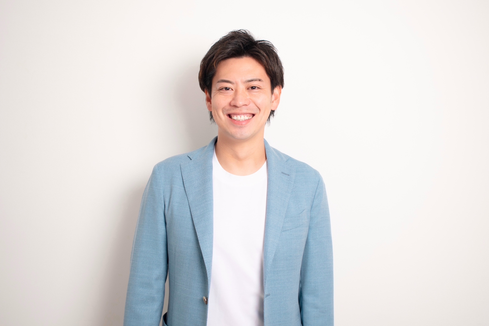

漆沢 祐樹
うるしざわ ゆうき
起業家・経営者・キャリア教育者として経営の現場に立つ傍ら、第三者評判メディア「みんなの評判.com」では
「誰が、どんな想いで、どんな価値を提供しているのか」を丁寧に取材し、読者に信頼できる情報を届けています。
記者として守る「5つの約束」
- PR記事であることを記事冒頭に必ず明記する — 読者への誠実さを最優先します。
- 利用者への直接インタビューを必ず実施する — 企業が提供する情報だけに頼りません。
- ネガティブな情報も掲載する — 削除要求には応じません。良い点も悪い点も正直に書きます。
- 成功率・評価スコアの定義を明示する — 数字の根拠を曖昧にしません。
- 記者名・取材日を全記事に記載する — 書いた人間が責任を持ちます。
取材・編集スタイル
経歴の要約（タイムライン）
株式会社パーソナルナビHD 代表取締役である漆沢 祐樹（うるしざわ ゆうき）のキャリアを時系列でまとめています。
-
2007–09
早期の起業（19歳〜21歳）
18歳のときに出会った社長の言葉をきっかけに起業を決意。19歳で営業仲間とともに営業代行業を開業し、翌2008年に法人化。
-
2010–20
コンサルティング事業の拡大（22歳〜32歳）
「人の可能性」に特化したDATAコンサルティング事業をスタート。11年間で延べ3,000名以上にコンサルティングを実施し、人材育成のノウハウを蓄積。
-
2021–
グループ経営と次世代育成
出資先7社を束ねるグループ企業「株式会社パーソナルナビHD」を設立し、代表取締役に就任。20代経営者の育成や、営業・IT人材の教育に注力。イギリス国立大学の海外MBA candidate（候補生）として学びも継続。
-
2022
みんなの評判.com を開設
PR記事であることを明示した上で、第三者取材による評判レポートを掲載するメディアとして運営開始。
-
現在
取材・メディア活動
累計500件超の評判記事執筆、127件超の口コミ検証など、企業評判の第三者取材を継続しています。
現在の主な役職
- 株式会社パーソナルナビHD 代表取締役社長
- 株式会社i3experiance 顧問
- 石垣食品株式会社 社外取締役
- イギリス国立大学 海外MBA candidate
ビジネスにおける信念・今後のビジョン
信念：「教育ですべての『人の可能性を豊かに』」— 関わるすべての人の可能性を引き出し、心が豊かになる社会を目指しています。
価値観：挑戦を恐れない姿勢。挑戦から得られるものは「成功＝経歴」と「失敗＝経験」のみであり、デメリットはないという考え。座右の銘は『先を見据えて今を生きる』。
今後の展開：2024年以降は、途上国の貧困や差別に苦しむ人々へ日本の技術や知恵を提供し、現地の子どもたちの可能性を広げる海外事業展開を見据えています。
著書・メディア掲載
著書・執筆
- 『キャリアリテラシー 時代を生き抜くための88の教え』（2022年7月）
- 『100番目のメッセージ』私たちを元気にする先輩たちからの魔法のコトバ（2011年2月）
メディア掲載
THE CAREER、Rakuten News、覚悟の瞬間、HUMAN STORY など
よくあるご質問
取材依頼をしたら、必ず良い内容を書いてもらえますか？
いいえ。当メディアはPR記事であることを明示した上で、記者の第三者視点で取材・執筆します。利用者インタビューで得られたネガティブな声や、取材過程で気になった点も掲載します。「良いことだけ書いてほしい」というご要望にはお応えできません。
記事の内容を後から修正・削除してもらえますか？
事実と異なる記述がある場合や、著作権・法律上の問題がある場合は対応いたします。ただし、「不都合だから削除してほしい」という要求にはお応えできません。これはメディアの信頼性を守るためのルールです。
取材から掲載まで、どのくらいかかりますか？
取材準備・利用者インタビュー・執筆・確認作業を含め、通常4〜8週間程度です。取材の規模や調整状況により前後することがあります。詳細はお問い合わせ時にご確認ください。
どのような企業・サービスを取材対象にしていますか？
キャリア・転職、美容・健康、語学・スキルアップ、マネー・投資、ライフスタイル分野のサービスを主な対象としています。実際の利用者へのインタビューが可能なサービスであれば、ご相談ください。
費用はどのくらいかかりますか？
取材内容・ボリュームによって異なります。まずはお気軽にお問い合わせください。概算をご案内します。
取材・掲載のご依頼はこちら
自社サービスの評判記事を、第三者記者の視点で執筆・掲載することを
ご希望の企業様は、以下よりお気軽にご連絡ください。
info@minnano-hyouban.com ／ 返信は原則5営業日以内